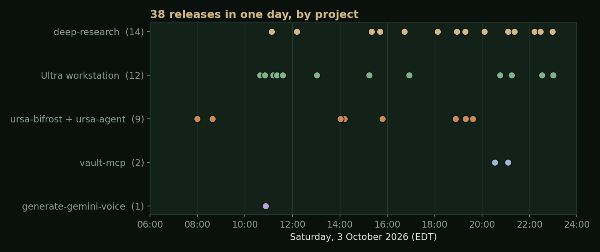
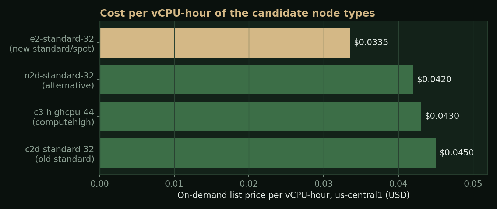
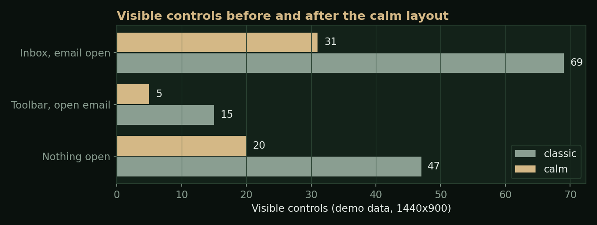
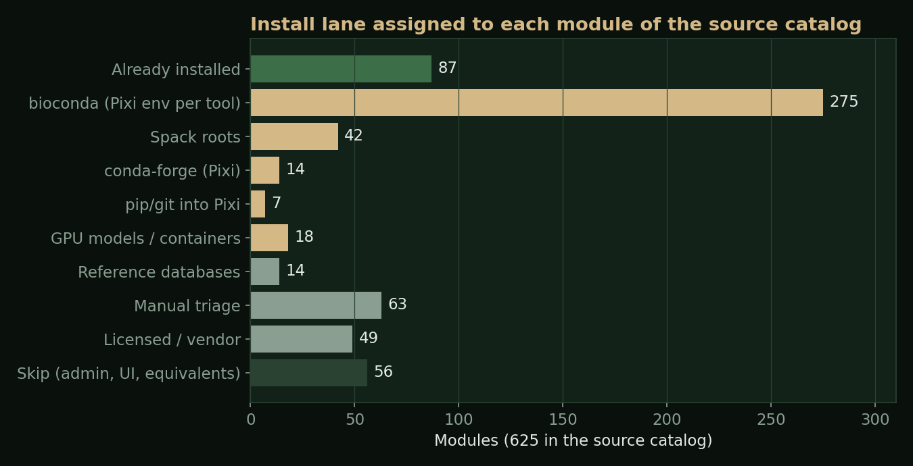

Abstract
On Saturday, 3 October 2026, I shipped 38 releases across five projects that together make up how UCR Research Computing's cloud cluster, Ursa Major, is operated, used by AI tools, and explained to people. The cluster itself was re-laid out around cheaper node types and gained an always-on test partition. Its MCP gateway, ursa-bifrost, got a reliability fix for a morning outage and became the only path the AI research engine uses for cluster work. The research engine, deep-research, went through 14 releases, retired about 970 lines of legacy code and gained a cluster dashboard, capacity-aware queueing and a plan-first launch mode. My operator desk, Ultra, went through 12 releases, from a calmer layout to fully separate Work and Personal workspaces. A new Go server, vault-mcp, gives AI tools append-only access to a personal notes vault. In the evening the cluster began installing itself a large share of the software catalog of UCR's on-premises cluster, as Slurm jobs.
The work was directed by me and carried out mostly by an AI agent (Hermes) working under written specs, test gates and explicit approval steps. This report gives the measurements behind each change, the trade-offs, and the mistakes, which were real and are listed in their own section.

The Stack
Each layer has a written spec that is kept in step with the code; several of them were re-read against the code and updated the same night.
| Layer | What it is | Releases today |
|---|---|---|
| Ursa Major | Slurm cluster on Google Cloud, built with Cluster Toolkit; shared Filestore for /home, /apps and /scratch | 2 merged infrastructure changes |
| ursa-bifrost | Go MCP server and CLI: a closed list of validated cluster commands, per-user Google sign-in, tiered permissions, two-step approval for anything that spends money; plus ursa-agent, a web front door for people without their own AI tool | 9 (v0.9.5 to v0.9.10, agent 0.4.0 to 0.4.2) |
| deep-research | Cited research reports from Gemini Deep Research, plus a Lab that plans, pilots and runs computational checks on the cluster | 14 (v0.54.0 to v0.61.2) |
| Ultra | A local operator desk: mail, calendar, tickets, Slack, the team's relationship ledger (Nexus) and the cluster in one keyboard-driven screen | 12 (v1.5.0 to v1.14.1) |
| vault-mcp | Go MCP server over a personal Obsidian vault | 2 (v0.1.0, v0.1.1) |
The Cluster: Fewer, Cheaper Nodes
An always-on check partition
Before today, the only fast place to run a tiny test was a 22-core
node that deep-research kept warm for itself at about $1.87 an hour.
Anyone else either waited for a node to boot or ran checks on the
login node, which we do not allow. The new
check partition is one e2-standard-4 that
is always on (about $0.13 an hour), scales out to three more nodes
when tests pile up, and retracts slowly, after an hour idle. Jobs
there are capped at 15 minutes.
Tested with real jobs: two started within one second on the always-on node; a third waited about 70 seconds while a second node booted, which is the auto-expand working. Python, NumPy, OpenMPI and GROMACS loaded. One surprise: Google would not boot an e2 with the cluster's default maintenance policy, so the partition uses live migration, which also keeps the always-on node up through Google's host maintenance.
Five kinds of partition instead of eight
Three numbers drove the re-layout. In the previous 30 days Google
had failed to start our standard nodes 390 times,
spot nodes 84 times and computehigh nodes
54 times, with each partition able to use only one zone. The
computehigh
partition accounted for about 95% of 60-day cluster spend. And
across all jobs, CPU efficiency was about 27%: jobs held far more
cores than they used.

The layout that went live:
-
standard (the default) and
spot moved to
e2-standard-32, at $1.07 and about $0.64 an hour, and may start nodes in any of the four us-central1 zones, up to 48 nodes each. - check as above; gpul4 and highmem unchanged.
- computehigh capped at 4 nodes, kept for multi-node MPI and AVX-512 code; nvmescratch capped at 2; the short-lived lab partition removed.
The apply matched the read-only plan exactly (2 added, 4 changed, 9
removed), with deployment and Terraform state backed up first. A
real job on the new standard booted a fresh e2 node in
about 60 seconds and found the software stack and all three shared
file systems. The login banner, cost tool, quick-start guide and the
machine-readable catalog the AI tools read were all updated to
match.
The trade-off that needed handling: e2 chips have AVX2 but not
AVX-512. Our software stack is built for x86_64_v3, so
all of it runs, but a binary someone compiled for AVX-512 crashes
with an illegal instruction. That became gateway work (next
section). Still unproven: a node starting in a zone other than
us-central1-a. That will happen on its own the next time zone a runs
short.
The Gateway: ursa-bifrost
A 15-minute outage, and its fix
The day started with the hosted dashboard showing a wall of errors. The cause was in bifrost's cluster login. It signs in to the login node with a short-lived OS Login key that lasts 8 hours. The overnight key had lapsed. On the morning's first request bifrost imported a new key, but the login node takes up to about 30 seconds to accept a new key, and bifrost gave up after about 40 seconds, deleted the key and started over. Five dashboard panels queued behind that one login. After a few rounds a key got through; the outage lasted about 15 minutes.
v0.9.5 changed three things: it extends the expiry of the existing key in place once less than 2 hours remain, which works with no gap (measured live before the change shipped); it renews in the background while a connection is in use; and a newly imported key is stored before its first login and never deleted for being slow. The test fake now behaves like the real login node, refusing a new key for a while. Every new safeguard was broken on purpose and a test caught each one. That evening the hosted bifrost extended its key in place, which is the renewal path proven in production.
The dashboard (ursa-agent) also lost every sign-in whenever Cloud Run scaled it to zero. ursa-agent 0.4.0 seals each sign-in into its own private bucket with the service's own key; only identity, access tier and gateway tokens are stored, never chat text.
Checks move off the login node
env_check answers "does this module load, and which
compiler, MPI and Python do I get?" It used to run on the login
node. In v0.9.6 it runs its fixed template as a one-core, three
minute Slurm job on check and reports the job and node
it used. A check of two real modules and one made-up one came back
in 3.6 seconds, with Lmod's own error for the fake.
A second finding: check jobs finished in two or three seconds but
took about 85 seconds to show as done. Slurm was not slow; the
gateway was answering from its queue cache. In v0.9.7, a
jobs_list call naming specific job IDs asks Slurm for
just those jobs, uncached, and keeps only the caller's own rows. End
to end, quick checks dropped to 6 to 10 seconds.
Teaching the gateway about the hardware
v0.9.8 to v0.9.10 made the gateway aware of the new layout: when a
partition is short of machines it suggests standard,
then spot, then computehigh; the partition
list shows time limits and instruction sets; the script checker
warns before an AVX-512 build lands on an e2 partition; and
job_explain recognizes an illegal instruction from the
log line or exit code 132. This was tested end to end with a small
AVX-512 program on standard: the checker warned, the
job crashed as predicted, and the explanation named the cause and
the fix. The cost was about a penny.
The Research Engine: deep-research
deep-research turns a question into a cited report and can then test a claim from that report computationally in its Lab: plan a job, run a pilot, run the real job on the cluster, and judge the result against criteria written down in advance.
From SSH to the gateway
Until today the Lab drove the cluster over SSH. The migration happened in steps, each live before the next:
- v0.55.0: real jobs go through bifrost. Pressing Submit on a reviewed plan counts as approval, but the Lab only sends the job if bifrost's plan is for exactly the script the Lab built, the worst-case cost is no more than three times the reviewed estimate and never over $10, and the run has sent no more than six jobs. bifrost's own per-program caps apply on top.
-
v0.56.0: fact checks and pilots run as short jobs
on
checkthrough bifrost. A full test run went fact check, pilot, real run with zero SSH calls. - v0.58.0: the warm-node code is gone, about 970 lines including a worker script, a keeper thread and its routes.
The last step, removing the SSH fallback entirely, is deliberately on hold. Our migration plan requires a week of real use on the new path without falling back, and that week started today.
Making the Lab cluster-aware
- Cluster view (v0.57.0): cost per hour now, nodes by state per partition, our jobs over 14 days, spend and CPU efficiency over 30 days, and storage. Each section keeps its last answer and refreshes in the background, because the storage read alone takes about 100 seconds.
- Capacity before queueing (v0.57.1): Google offers no way to ask in advance whether it has machines to spare, so the Lab uses recent evidence: if a partition reported a shortage, or lost one of our nodes in the last three hours, the run goes to a partition that suits the same kind of job. A job bounced while waiting now moves after the first failure, not the third.
- Certificates in every job: one run's pilot failed because the cluster's Python could not verify an HTTPS certificate. Every Lab job now sets up the CA bundle before the user's script starts.
- Core advice from history (v0.59.0): before submit, the check warns when similar past runs used far fewer cores than the plan requests and suggests a number. This goes straight at the 27% efficiency figure.
A calmer interface, Max and Plan first
v0.54.0 and v0.60.0 cut the interface down: the report page went from about 20 buttons to four plus a menu, and each Lab run card now shows one status line and one main button. v0.61.0 added Deep Research Max as a launch option and Plan first, which shows the agent's research plan for editing before anything is spent; nothing launches on its own. Cost estimates now include Google's search charges: the spec's worked table puts one run at about $0.95 to $2.07 on the regular agent and $1.79 to $4.03 on Max. Projects can also be linked to a lab, grant or GCP project in the team ledger; v0.61.2 fixed that picker after live testing showed the ledger's own search ranked loose matches above real name matches.
The spec was re-read section by section against the code at the end of the day (354 lines added, 208 removed; 3,323 lines). All 756 tests pass, including checks that keep the spec and code in step.
The Operator Desk: Ultra
A calm layout driven by one table
Ultra had grown a button for everything. v1.5.0 moved every action into one table that drives the toolbar, the menus and the command palette. Tests fail if an action goes unplaced or a toolbar grows past its budget, so nothing can be silently dropped. The classic layout stays, switchable both ways from the keyboard.

Ledger writes over MCP, without duplicates
In v1.6.0, logs, tasks and links go to the team ledger through its MCP server instead of a local CLI. The rule that matters is about uncertain outcomes: if the server refuses before running anything, Ultra falls back to the CLI; if the result is unknown (a timeout or dropped connection), Ultra reports a failure and asks the operator to check the record. It never re-sends, so a flaky network cannot produce a duplicate log. Deletes stay on the CLI by design. Later releases added cluster facts to support mail (a job ID in an email shows the job's state and a likely cause) and a read-only Ask Hermes that can look things up but not act.
Two workspaces, and nothing crosses
v1.11.0 split Ultra into Work and Personal, each with its own config, state database, Google sign-ins, drafts, history and signature, switched with one key and colour-coded so it is always clear which one is open. Personal has no team ledger, no Slack and no tickets; its ledger is the notes vault. Later releases let Personal log to and add tasks in the vault through vault-mcp, gave it a "Life" home organized by area, added read-only house sensor readings from a home server, and let a task be ticked done with a one-time token that refuses if the note changed since the page loaded.
The separation was tested the hard way. In the evening, Personal's daily plan showed work tasks. The cause was a cached copy of the work task list left in Personal's database from before the ledger was switched off there, and nothing stopped Personal from reading it. v1.14.1 makes a workspace with the ledger off unable to read it at all and ignores any leftover cache. 783 tests pass. The spec's workspace, vault and Life sections were rewritten against the code the same night (2,861 lines).
The Notes Server: vault-mcp
The personal vault is about 950 Markdown notes. An off-the-shelf MCP server was tried first, code-reviewed and run read-only. It handled safety well, but writing in the vault's own conventions called for something purpose-built. vault-mcp is a small Go binary with no network, no login and no database. It reads the notes directly (1 to 40 ms per answer) and follows the vault's own layout rules note to decide where things go.
- Append or create only. A guard checks that every existing line survives each write; the only in-place edit allowed is ticking a task done.
- One git commit per write, of just that note, authored as the owner "via" the client that wrote it.
- Stale-write guard: a write carries the hash from the read and fails if the note changed meanwhile, for example while open in Obsidian.
- Never follows a symlink. The vault contains a link to a work folder; it stays invisible.
- A read-only mode removes the write tools entirely.
Before the server, the vault itself was reorganized: one place and one file name per log type, 172 notes moved with history kept, and links rewritten. Every write was first run against a throwaway copy of the vault, which caught one bug before release: new tasks landed under the wrong heading because that heading happened to contain the text "(active".
Software Parity, Built by the Cluster
UCR's on-premises cluster publishes its module tree. The catalog holds 625 modules and 1,223 version files with history back to 2012. Each module was matched against our live modules, our pinned Spack recipes (9,084), bioconda (12,739 names) and conda-forge (34,560), then assigned one install lane.

Every build runs as a Slurm job on compute nodes; the login node only syncs files. Each bioconda or conda-forge tool gets its own Pixi environment and a clean-shell smoke test, and its module is published only if the test passes. A ten-tool pilot passed first; the rest ran 24 at a time as a spot array.
A crash on exit
The most instructive failure was a new time-series environment,
python-ts (statsforecast, neuralforecast, stumpy,
ruptures, cfgrib and friends, 51 packages). Every import and fit
test passed on an L4 GPU node, then Python aborted on shutdown with
"double free or corruption". A bisect job found the pair: eccodes
2.43 and later pull in a library that ships its own copy of libproj,
and pyproj ships another. Two copies of the same library in one
process crash on exit. Pinning eccodes==2.42.0, which
bundles its own library without the second libproj, fixed it. The
rebuild added a GRIB2 write-and-read round trip and checks every
risky import pair in both orders. On a synthetic series with noise
of standard deviation 0.5, AutoETS forecast error came in at 0.417
and NHITS at 0.437. The environment is published as a module.
Status at midnight
As of the last check, 23:39 EDT, with jobs still running:
- Pixi tools: 226 tried, 208 published. Failures each have a cause: misnamed packages, a Python 3.12 removal, a binary needing a newer glibc than Rocky 8's 2.28, and one needing AVX-512. Those go to a retry pass or to containers.
- Spack: 47 roots built, 5 failed, diagnosis pending the job's error output.
- Containers: all six passed (DeepVariant CPU and GPU, NCBI FCS-GX, RAPT, PGAP and the SimVascular solver).
- Also live: WPS 4.6.0, wgrib2 3.8.0 and eccodes 2.47.0, so WRF can be fed real weather data.
Media Tooling
For a set of short demo videos (the cluster dashboard, the desk, the research engine, the gateway and the ledger server), narration came from Gemini text-to-speech. Every clip ended in an eighth of a second of static. The cause: the WAV response carries a trailer, a C2PA manifest marking the audio as AI-generated, and the voice tool played it as sound. v0.3.1 of the voice tool keeps only the audio frames. Each narration line was transcribed and compared word for word with the script, which also caught an earlier bug where the tone instruction was being read aloud as part of the narration.
What Went Wrong
A day this dense produces mistakes. These are the ones worth recording, most of them the agent's, caught by checks rather than by luck:
- A test wrote to the real database. One new test added 16 fake "running" reports to the live history. They were removed from a backup-protected copy, and v0.61.1 makes the test suite unable to touch the real database, verified by removing the per-test fix and confirming nothing changed.
- An interrupted test may have launched a paid run. A cut-off test of the Max agent may have started one run before saving its ID. Worst case is a few dollars; it cannot be checked or cancelled from our side.
- Files pushed over a running job. The first python-ts rebuild exited 0 having built nothing, because repo files were synced over its script mid-run. Jobs now run from private copies.
- A version label went out wrong. Two tags on one commit made the hosted gateway report the agent's version. The fix shipped as a new release rather than moving a published tag.
- A workspace leak. Work tasks appeared in Personal through a stale cache, described above.
- A session that hung. One long agent session stalled for several minutes under gateway load while other sessions sent very large requests. Nothing was corrupted; the work resumed in a fresh session from the saved transcript.
Patterns Worth Keeping
- Measure the bottleneck before fixing it. The 85-second check was a cache, not Slurm. The stockouts were one zone and one machine family, not "the cloud".
- Prefer renewal to replacement for anything with propagation delay: keys, certificates, DNS.
- Never re-send a write whose outcome is unknown. Report it and let a person look.
- Approval binds to the exact artifact. A reviewed plan authorizes that script and that cost bound, not whatever the system builds next.
- Delete code only after the replacement has carried real load, and write the waiting period into the plan.
- Separation is a property you test, not a setting you trust.
- Publish only what passes a smoke test, and keep the reason for every failure.
- Keep the spec current the same day. Three specs were re-read against their code before midnight.
What Is Next
- Finish the parity install: the retry pass, the Spack failures, then decisions on reference databases and licensed codes.
- Remove deep-research's SSH fallback after a clean week on the gateway.
- Recalibrate the Lab's cost estimate against real runs, and price job arrays correctly in the gateway.
- Keep pushing CPU efficiency up from 27%, which is now the largest cost lever left.
Repositories and Specs
Public repositories touched today:
-
UCR-Research-Computing/ursa-bifrost
(spec:
docs/SPEC.md, 1,155 lines) -
charles-forsyth/deep-research
(spec:
docs/SPEC.md, 3,323 lines) -
charles-forsyth/ultra-workstation
(spec:
SPEC.md, 2,861 lines) - charles-forsyth/generate-gemini-voice
The cluster deployment, the team ledger and vault-mcp live in private repositories. Figures in this report come from the git history, the specs, the test runs and the live checks recorded during the day; prices are Google's published on-demand rates for us-central1 on 3 October 2026.